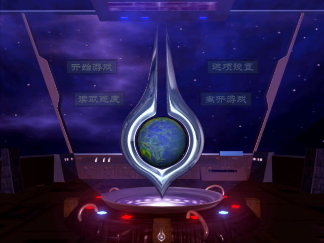
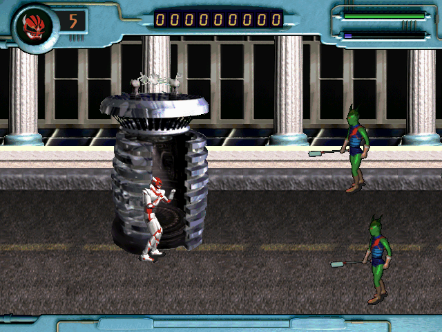

名稱：金剛戰神：地球保衛戰 (VectorMen，簡中版) 簡介：韓國Magic 1999年出品的動作遊戲，2003年由娛樂軟體簡中化並代理發行 [待補]。

保護：光碟，破解碼： VectorMen.exe 83 F8 05 75 24 -- -- -- -- 00 25 63 3A 5C 00 2E 5C 2E -- -- 需將光碟上的Movie目錄拷貝到安裝目錄裡。 備註：安裝時若一直出現移除舊檔時，請換成乾淨的系統再重新安裝。 操作： 左Shift = 拳擊 Z = 腳踢 X = 跳躍 Esc = 結束遊戲